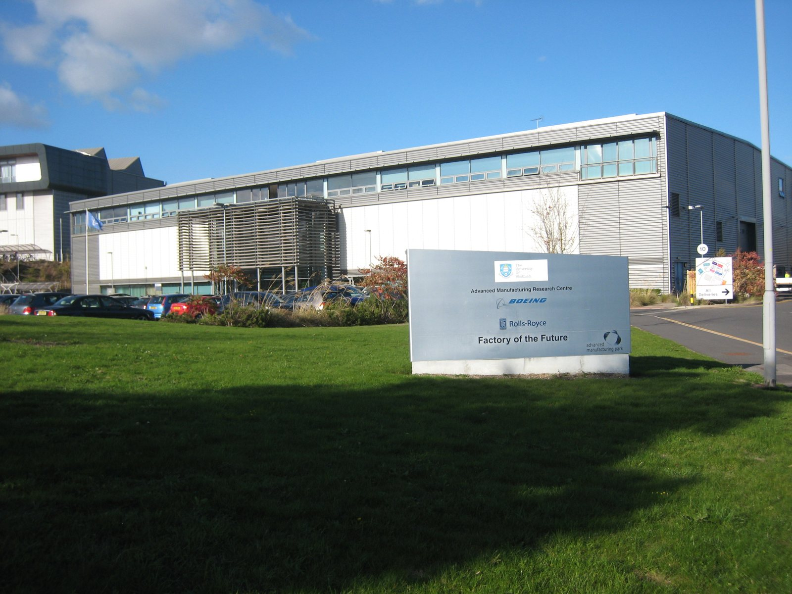

I / INPUT
何を持ち込んでいるか。
活動の出発点となる資源と課題を分けて整理します。「自社」は、その場・制度を運営する組織を指します。
- 自社・運営組織
HVM本部の接続担当と各センターの技術・案件担当。初回の無料相談から、課題に合う専門機関と支援の規模を選ぶ。
公開資料で確認出典 1- 他社・事業会社
LISI AEROSPACEのRugby工場が導入者・継続運用者。ETech、SMART machinery、Danobatが機械側で参加し、工場の要件に合う工程を設計する。
公開資料で確認出典 1- スタートアップ
起業家・SME向けの入口や低費用サービスは用意されている。一方、今回のLISI案件でスタートアップが担った役割は確認できない。
公開資料で確認出典 1- アカデミア
LISI案件ではUniversity of Sheffield AMRCがデータ取得・解析、モデル開発を担当。産業用機械と学術研究をつなぐ実装上の役割が明確である。
公開資料で確認出典 1- 市民・利用者・現場
直接の対象は製造現場の従業員であり、操作・データ活用の教育を伴う。一般住民の共同設計参加は、当該案件では確認できない。
公開資料で確認出典 1
有形資産
場所・設備・実証環境関係資本
信頼・ネットワーク・導入先金融資本
活動資金・投資・費用負担知的資本・データ
技術・知財・知識・標準課題・ニーズ
誰の何を変えるのかII / VALUE CREATION FUNCTIONS
資源を、どう価値へ変えるか。
以下は既存の8ステップへの編集上の対応づけです。各施設の公式な工程名や、全工程を自前で担うことを意味しません。
III / OUTPUT
直接、何が生まれたか。
試作品、データ、契約、標準、育成した人材など、活動から直接生まれたもの。
IV / OUTCOME
その結果、何が変わったか。
実際の利用、行動、業務、事業、地域の変化。報告された変化と、施設の活動に帰属できる効果は区別します。
PROJECT IN FOCUS / 具体的な事例
AMRC × LISI AEROSPACE Rugby スマート生産ライン
確認できた段階：導入 調査確認日 2026-09-28
生まれたもの
実際の製造に使うラインと、その運用・改善に必要なデータ・人材の仕組みを整備。
確認できた変化
生産性・追加受注・雇用という企業成果を報告し、追加ラインへ進む準備も公表。複数工場へ展開済みという意味ではない。
評価の限界：総費用、品質不良・安全の長期推移、他要因を控除した便益は不足。測定期間を揃えて再評価すべき。
DESIGN BACKWARDS FROM IMPLEMENTATION
社会実装から逆算して、
何を先に整えているか。
実証の先にある導入・運用・継続から、この事例の設計を読み解きます。原典で確認できる仕組みと、MDLの設計解釈・他地域へ応用するための提案を区別して読んでください。「提案」「未実施」と記す内容は、当地で実施済みの工夫ではありません。仕組みの存在と、全案件で成果が出たことも別に扱います。
MORE DETAIL / 運営・根拠・応用
運営の全体像と、学びを深める資料。
費用負担、公表値、応用条件、写真・動画、原典を続けて確認できます。
01どう動かしているのか。
企業の課題を無料の初回相談で整理し、専門分野を持つセンターと必要な研究者・設備に接続する。その後は企業の予算と目標に合わせた案件を組成し、必要な場合はInnovate UK等の資金制度も探索する。センター群は試作だけでなく製造工程、サプライチェーン、職業技能を支援し、生産現場への導入を狙う。全案件共通の固定期間や一律のIP契約は確認できず、企業契約と競争的資金の案件を区別して読む必要がある。AMRCとLISI AEROSPACEでは工場の生産ライン改善が追加受注と雇用につながったと公表。2026年4月の技術戦略は150超の産業パートナーと作成し、2040年までの能力開発と投資を案内する。人材のロードマップも補完的に検討する。
- 製造課題と投資判断を明確化
- 専門センター・設備・資金を組み合わせる
- 工程と技能を実証する
- 顧客工場・供給網へ導入
02誰が負担し、誰が担うか。
企業の受託研究・サービス対価、公的な共同研究資金、Innovate UKを通じた基盤支援。HVM自身が企業へ一律に助成金を配る制度ではない。案件別の費用と知財条件は個別協議。
制度やプログラムの財源と、各参加企業・地域に発生する費用は同じではありません。公開範囲を超える案件別予算・契約条件は未確認です。
03確認できたこと。
初回相談は無料。HVM自体はイノベーション案件への資金供与を行わず、必要な資金制度につなぐ。
読み取れる範囲：個別の補助対象支援やセンター固有サービスとは区別が必要。
原典で確かめる ↗ 出典の説明 ↓04日本で活かすなら。
【分析】地域で全設備を新設する前に、既存の大学・公設試・民間工場の専門機能を一つの窓口から使えるようにする方が、投資負担を抑えやすい。導入企業の工程責任者が最初から参加し、研究成果だけでなく歩留まり、保守、調達可能性、教育時間まで実証に含める。地域モビリティでも車両導入だけに補助を付けず、運行・整備・データ管理を複数事業者が再現できる技能と手順に変えることが重要だ。中小企業には初回診断と共同設備への接続を薄く広く提供し、個別企業の利益に近い部分は企業負担、共通基盤や人材育成は公共負担という整理を検討できる。
05そのまま真似できないこと。
優良企業の改善事例は全利用企業の平均効果ではない。反対仮説は「支援がなくても同じ設備投資と受注が実現した」であり、未支援企業との比較が必要だ。助成比率や『三分の一ずつ』というモデルを、現在のHVM実績配分と断定することもできない。共用設備は維持更新費と予約制約を伴う。地域への便益を測るには、企業売上に加え中小企業のアクセス、技能移転、良質な雇用の分配を確認する必要がある。
06次に、何を確かめるか。
【提案・未実施】地域の産業支援責任者が、同じ工程課題を持つ中小企業3社に既存設備を使う90日診断を実施。導入前後の不良率・工数・総費用と、支援を利用しない類似工程を比較。2社以上で費用込みの便益が成立し教育手順を他社で再現できれば拡張。設備待ちと移動費が便益を上回るなら設備・場所を変更する。
07現場を、写真と動画で。

PHOTO: Chemical Engineer · 掲載元 ↗ · CC BY-SA 4.0 ↗
写真の詳細
AMRCのFactory of the Future。HVM Catapultを構成する施設の一つ。
AMRC Factory of the Future 22 10 2018 1 · 2018-10-22 · 縮小・表示枠に合わせた切り抜き。色変更なし。
冒頭写真：HVM Catapultの構成機関AMRCが運営するFactory 2050。シェフィールドの研究施設。
公式サイトで、写真・最新の活動を見る ↗08原典を読む。
Catapults: bridging the gap between research and industry ↗
公的基盤・企業契約・共同R&Dを組み合わせる制度設計。現在の実績配分ではない
Industry 4.0 smart factory adoption transforms aerospace company’s production line ↗
機械5台と供給者、データモデルTRL6、教育・運用体制
ATI funding for industry-defining smart factory production line ↗
ATI 975,000ポンド、27か月、機械・工具供給者との連携